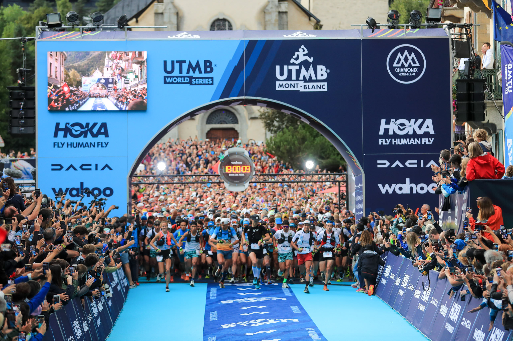
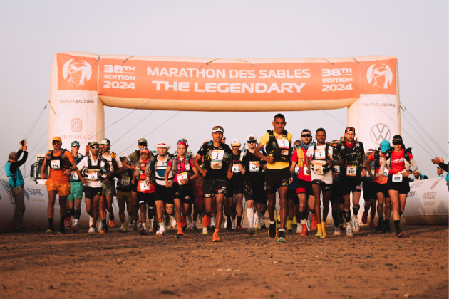
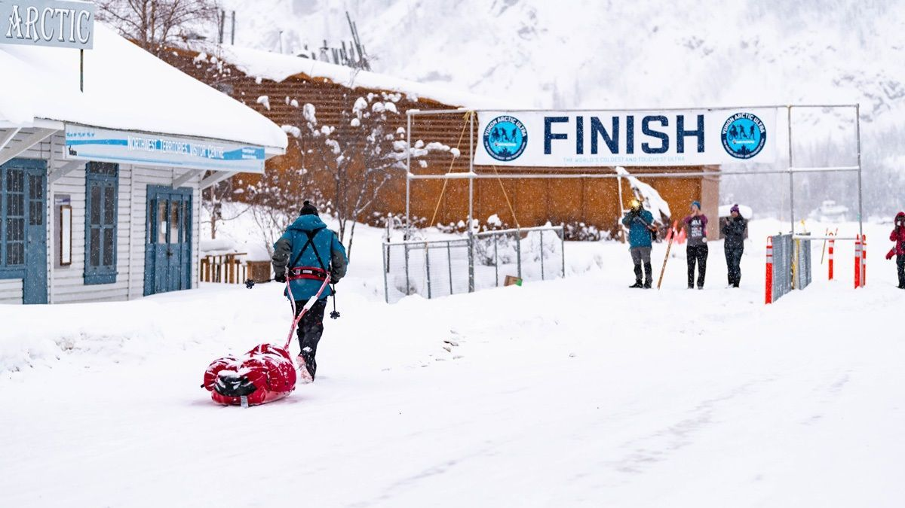
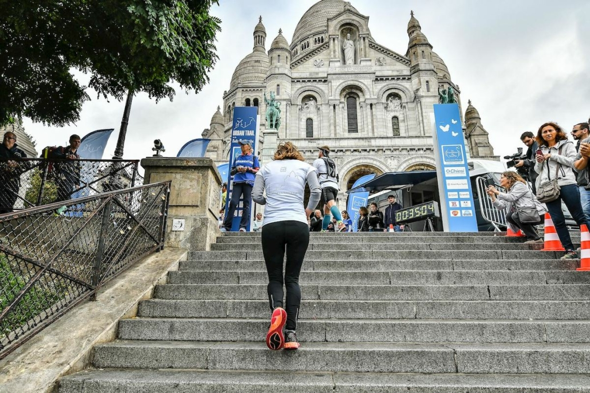
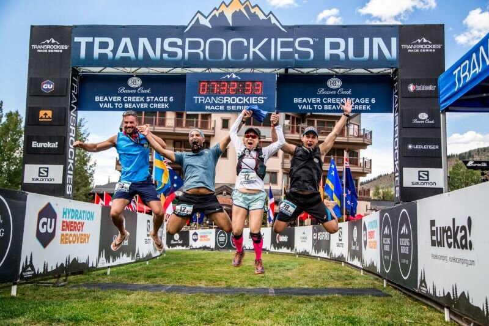
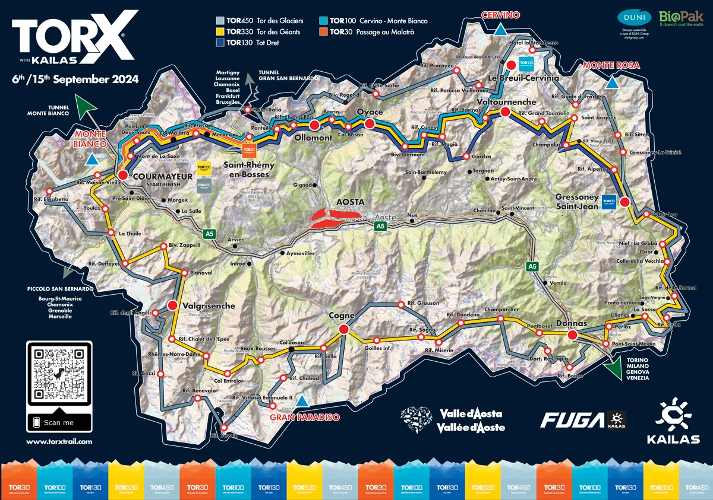
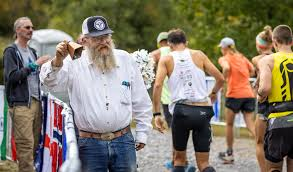
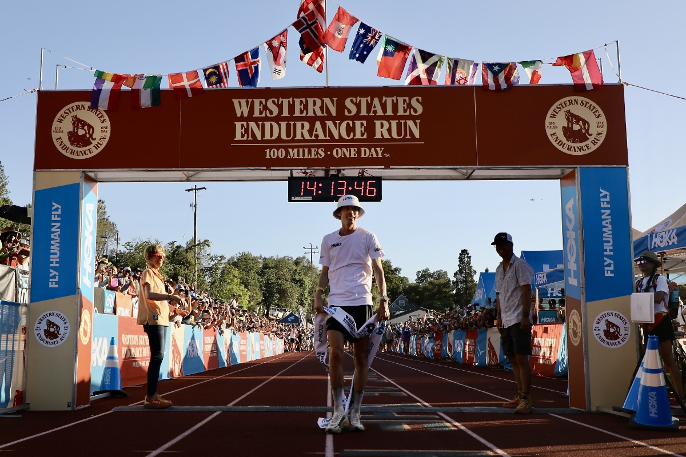

Les ultra-trails classiques sont les plus populaires et emblématiques du monde de l’ultra-trail. Ils se déroulent principalement sur des sentiers de montagne ou en pleine nature, avec des distances généralement supérieures à 42 km. Ces courses se distinguent par leurs dénivelés impressionnants, les terrains techniques, et les conditions climatiques parfois imprévisibles. Les participants doivent être bien équipés pour affronter ces défis, avec du matériel obligatoire comme des vêtements adaptés, de l’eau, et de la nourriture. L’Ultra-Trail du Mont-Blanc (UTMB) est l’un des exemples les plus célèbres, proposant un parcours exigeant autour du Mont-Blanc avec 170 km et 10 000 m de dénivelé positif.

Ces courses uniques se déroulent dans des environnements arides et désertiques, où les participants doivent relever le défi de la chaleur extrême et du terrain sablonneux. Le Marathon des Sables, par exemple, plonge les coureurs au cœur du Sahara sur 250 km en autosuffisance alimentaire. Ces épreuves nécessitent une excellente préparation pour gérer la chaleur, transporter son équipement, et avancer dans des conditions parfois très hostiles. Courir dans le désert demande un mental d’acier et une capacité à s’adapter à l'isolement et aux vastes étendues.

Courir dans des climats extrêmes, comme l’Arctique ou des zones polaires, est un défi pour les coureurs les plus aguerris. Ces courses mettent à l’épreuve la résistance au froid et nécessitent un équipement thermique de pointe pour éviter l’hypothermie. Avec des températures atteignant parfois -40°C, comme dans le 6633 Arctic Ultra au Canada, ou des parcours enneigés tels que The Ice Ultra en Suède, ces épreuves poussent les limites de l’endurance humaine. En plus de la distance, les participants doivent gérer des terrains gelés et des vents glacials.

Contrairement aux ultra-trails classiques, les ultras urbains se déroulent dans ou autour des grandes villes. Ces courses, bien que souvent moins techniques, combinent des routes, des parcs et des sentiers, et offrent une accessibilité accrue pour les spectateurs. Le Paris EcoTrail, par exemple, est une course de 80 km qui se termine de manière spectaculaire au premier étage de la Tour Eiffel. Ces événements sont idéaux pour ceux qui souhaitent découvrir l’ultra-distance sans s’éloigner des commodités urbaines.

Les courses à étapes sont idéales pour ceux qui préfèrent répartir leur effort sur plusieurs jours. Chaque journée propose un itinéraire différent, et les coureurs dorment généralement dans des camps ou des zones prévues pour le repos. Ces épreuves, comme la TransRockies Run aux États-Unis, offrent une atmosphère conviviale et un rythme plus détendu. Les participants peuvent mieux profiter des paysages et nouer des liens avec les autres coureurs, tout en testant leur endurance sur des distances importantes.

Dans les courses ultra non-stop, les coureurs doivent parcourir l’intégralité de la distance en une seule fois, sans étape ni pause obligatoire. Ces courses, comme le Tor des Géants en Italie (330 km avec 24 000 m de dénivelé positif), demandent une gestion précise de l’énergie, de la fatigue et parfois même du sommeil. Les participants courent de jour comme de nuit, souvent avec peu de repos. Ces épreuves sont un véritable défi pour le mental et l’endurance, car les coureurs doivent naviguer en autonomie, souvent dans des conditions difficiles.

Ces courses au concept original consistent à effectuer une boucle fixe (souvent 6,7 km) toutes les heures, aussi longtemps que possible. Le gagnant est le dernier à rester en course. Les ultras backyard, comme le Big Dog's Backyard Ultra, testent autant l’endurance mentale que physique. Entre chaque tour, les coureurs ont quelques minutes pour se reposer, manger ou boire, avant de repartir. La répétition des boucles peut sembler monotone, mais elle exige une stratégie bien pensée et une volonté inébranlable.

Certaines courses sont devenues des légendes dans le monde de l’ultra-trail, grâce à leur histoire ou leur prestige. La Western States Endurance Run, créée en 1974, est la première course d’ultra-trail connue. Ces courses attirent les meilleurs athlètes et les passionnés du monde entier, qui rêvent d’y participer au moins une fois dans leur vie. L’UTMB, souvent qualifié d’Olympiades de l’ultra-trail, est l’exemple parfait d’une course mythique qui combine paysages à couper le souffle et compétitions féroces.